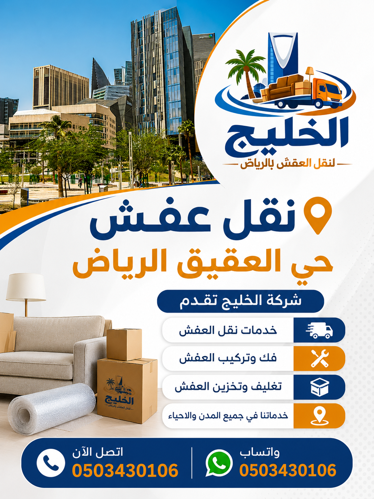

شركة نقل عفش حي العقيق بالرياض | فك وتركيب وتغليف ونقل الأثاث بأفضل الأسعار
نقل عفش حي العقيق بالرياض مع الفك والتركيب والتغليف بأحدث المعدات وأفضل الأسعار – دينا نقل عفش حي العقيق بأسعار تنافسية
فك وتركيب
فك وتركيب غرف النوم والمطابخ والمكيفات
تغليف آمن
تغليف احترافي بكراتين وبطانيات التغليف
ضمان شامل
ضمان على سلامة الأثاث أثناء النقل
نقل عفش حي العقيق بالرياض – خدمة احترافية متكاملة
تقدم شركة الخليج خدمات نقل عفش حي العقيق بالرياض باستخدام أحدث سيارات النقل المجهزة وفريق متخصص في فك وتركيب وتغليف الأثاث، مع توفير حلول متكاملة لنقل الشقق والفلل والمكاتب داخل وخارج الرياض بأعلى معايير الأمان والجودة. إذا كنت تبحث عن شركة نقل عفش حي العقيق موثوقة، فإننا نضمن لك تجربة نقل سلسة وخالية من المتاعب.
حي العقيق من الأحياء الراقية في الرياض، ويتميز بموقعه الحيوي وقربه من الخدمات. نحن نقدم نقل أثاث حي العقيق بسيارات مغلقة ونش رفع أثاث لتسهيل نقل الأثاث الثقيل. كما نوفر دينا نقل عفش حي العقيق للشقق الصغيرة بأسعار اقتصادية. فريقنا من عمال نقل عفش حي العقيق مدرب على التعامل مع جميع أنواع الأثاث الفاخر.

نقل الأثاث داخل حي العقيق يتم بكل احترافية وسرعة، مع توفير ونش رفع أثاث للأبراج والفلل الكبيرة. نضمن لك نقل عفش من حي العقيق أو نقل عفش إلى حي العقيق بكل سهولة وأمان.
لماذا تختار شركة الخليج لنقل عفش حي العقيق؟
تعتبر شركة نقل عفش حي العقيق من أفضل الشركات التي تقدم خدمات النقل بجودة عالية. إليك الأسباب التي تجعلنا الخيار الأمثل:
خبرة طويلة في نقل الأثاث
أكثر من 15 عاماً في مجال نقل العفش بحي العقيق والرياض بالكامل.
عمالة مدربة
عمال نقل عفش حي العقيق مدربون على فك وتركيب جميع أنواع الأثاث.
سيارات مغلقة
سيارات نقل عفش حي العقيق مجهزة بأحدث أنظمة التثبيت لحماية الأثاث.
أسعار مناسبة
نقدم أرخص شركة نقل عفش حي العقيق مع الحفاظ على جودة الخدمة.
ضمان سلامة المنقولات
ضمان شامل ضد الكسر والتلف أثناء عملية نقل الأثاث داخل حي العقيق.
ونش رفع أثاث
متوفر ونش رفع أثاث حي العقيق لنقل الأثاث الثقيل للأبراج.
أسعار نقل عفش حي العقيق
تعتمد أسعار نقل عفش حي العقيق على حجم الأثاث وعدد العمال ومسافة النقل وخدمات الفك والتركيب والتغليف المطلوبة. نقدم أسعارًا تنافسية تناسب جميع الميزانيات.
أفضل شركة نقل عفش حي العقيق تقدم عروضًا خاصة على مدار العام. اتصل بنا للحصول على عرض سعر دقيق ومجاني.
خدمات نقل الأثاث داخل حي العقيق
نحن نقدم نقل الأثاث داخل حي العقيق بكل احترافية، سواء كنت بحاجة لنقل شقتك أو فيلتك أو مكتبك. نغطي جميع أنحاء حي العقيق ونضمن الوصول السريع والآمن. خدماتنا تشمل نقل الشقق بأنواعها، نقل الفلل الكبيرة، نقل القصور، وكذلك نقل المكاتب والمحلات التجارية. نستخدم سيارات نقل عفش حي العقيق المجهزة بأحدث المعدات لضمان عدم تعرض الأثاث لأي ضرر.
فريقنا من عمال نقل عفش حي العقيق يمتلك الخبرة الكافية للتعامل مع نقل العفش الثقيل مثل البيانو والخزائن الضخمة. كما نوفر نقل الأجهزة الكهربائية مثل الثلاجات والغسالات والمكيفات بطرق آمنة تضمن سلامتها. مع الالتزام بالمواعيد وسرعة التنفيذ، نضمن لك تجربة نقل مميزة.

خدمة فك وتركيب الأثاث بحي العقيق
نقدم خدمة فك وتركيب الأثاث بحي العقيق بواسطة فريق من النجارين المتخصصين. تشمل خدماتنا فك وتركيب غرف النوم بمختلف أنواعها، فك وتركيب المطابخ الحديثة، فك وتركيب المكيفات بجميع أنواعها (سبليت – شباك – مركزية). كما نقدم نجار فك وتركيب عفش متخصص في المجالس والكنب والمكاتب. يقوم معلم فك وتركيب أثاث لدينا بفك القطع الكبيرة بدقة وتركيبها في المكان الجديد بنفس الجودة. نستخدم أدوات حديثة لضمان عدم تلف أي قطعة أثاث أثناء الفك أو التركيب. هذه الخدمة متاحة ضمن باقة نقل العفش أو كخدمة منفصلة حسب رغبتك.
تغليف العفش قبل النقل
نعتمد في شركة الخليج على أفضل تغليف العفش قبل النقل للحفاظ على الأثاث من الخدوش والكسر. نستخدم كراتين نقل العفش المقواة متعددة المقاسات لتغليف المقتنيات الصغيرة والزجاجيات. كما نوفر بطانيات التغليف السميكة لحماية قطع الأثاث الكبيرة. خدمة تغليف عفش حي العقيق تشمل تغليف الكنب والطاولات والأجهزة الكهربائية باستخدام الفوم والبلاستيك الفقاعي. نضمن أن يصل أثاثك إلى المنزل الجديد بحالة ممتازة. فريقنا المتخصص يقوم بعملية تغليف الأثاث بسرعة واحترافية، مع وضع ملصقات توضيحية لتسهيل عملية التفريغ والترتيب.
أفضل طرق تغليف الأثاث
تستخدم شركة الخليج أفضل طرق تغليف الأثاث لضمان الحماية القصوى. نبدأ بتفكيك الأثاث إلى أجزاء صغيرة ثم تغليف كل قطعة على حدة. نستخدم البلاستيك المطاطي (Stretch Film) لحماية الأسطح من الخدوش، والكرتون المقوى (Double Wall Carton) للأجهزة الكهربائية، وزوايا كرتونية (Edge Protectors) لحماية الزوايا والحواف. كما نستخدم الفوم الناعم (Foam Sheet) لتغليف الزجاج والمرايا. بالنسبة للمجالس والكنب، نستخدم أغطية قماشية خاصة تمنع الاتربة والرطوبة. هذه طرق تغليف الأثاث المتبعة عالمياً تضمن لك وصول أثاثك بحالة ممتازة، خاصة عند نقل العفش الثقيل أو الأثاث الفاخر في حي العقيق.
كيف نحافظ على الأثاث أثناء النقل
تعتمد شركتنا على مجموعة من الإجراءات لحماية الأثاث أثناء النقل. أولاً، يتم ترتيب الأثاث داخل سيارات نقل عفش حي العقيق بطريقة احترافية تمنع الاحتكاك أو التلف. نستخدم أحزمة تثبيت (Straps) لتأمين القطع الكبيرة ومنعها من الحركة أثناء السير. ثانياً، نقوم بفصل القطع القابلة للفك وتغليفها بشكل فردي. ثالثاً، يتم وضع مواد عازلة بين القطع لمنع الاحتكاك. كما نحرص على عدم تكديس الأثاث بشكل عشوائي، ونستخدم الونش لرفع الأثاث الثقيل إلى الأدوار العليا. كل هذه الخطوات تضمن حماية الأثاث أثناء النقل ووصوله سليماً 100%. سياراتنا مجهزة بنظام تعليق ممتص للصدمات لتقليل الاهتزازات.
نقل عفش مع فك وتركيب المكيفات
نحن نقدم خدمة نقل عفش مع فك وتركيب المكيفات بشكل متكامل. نوفر فنيين متخصصين لفك وتركيب المكيفات أثناء عملية النقل، سواء كانت مكيفات سبليت أو شباك أو مركزية. يتم تفريغ غاز المكيف وفكه بعناية، ثم تركيبه في المنزل الجديد وفحصه للتأكد من عمله بكفاءة. هذه الخدمة توفر عليك عناء البحث عن فني منفصل، وتضمن سلامة المكيفات أثناء النقل. نستخدم معدات خاصة لنقل المكيفات دون تلف، ونقدم ضماناً على خدمة التركيب. إذا كنت بحاجة إلى نقل عفش مع تركيب المكيفات في حي العقيق، فنحن الخيار الأمثل.

نصائح مهمة قبل نقل العفش
نقدم لك مجموعة من نصائح مهمة قبل نقل العفش لتسهيل العملية وتجنب المشاكل. أولاً، يفضل تجهيز المقتنيات الشخصية وفرز الأثاث قبل موعد النقل، حيث يمكنك التخلص من القطع غير المستخدمة أو التالفة. ثانياً، قم بتفريغ الخزائن والدواليب من محتوياتها لتخفيف الوزن. ثالثاً، تأكد من إخلاء طريق النقل في المنزل الجديد لتسهيل عملية التفريغ. رابعاً، قم بتصوير الأثاث الثمين قبل النقل لتوثيق حالته. خامساً، اختر شركة نقل موثوقة مثل شركة الخليج التي توفر نقل عفش مع الفك والتركيب حي العقيق. سادساً، حدد موعد النقل في وقت مبكر لتجنب الازدحام. اتباع هذه النصائح يضمن لك تجربة نقل سلسة وخالية من التوتر.
أخطاء يجب تجنبها أثناء نقل الأثاث
هناك العديد من أخطاء يجب تجنبها أثناء نقل الأثاث لضمان سلامة منقولاتك. من أهم الأخطاء: عدم التغليف الجيد، حيث أن إهمال تغليف الأثاث يعرضه للخدوش والكسر. الخطأ الثاني هو اختيار شركة غير متخصصة في نقل العفش، مما قد يؤدي إلى تلف الأثاث أو تأخير المواعيد. الخطأ الثالث هو عدم تفريغ الخزائن قبل النقل، مما يزيد الوزن ويصعب عملية النقل. الخطأ الرابع هو عدم قياس المداخل والمخارج في المنزل الجديد، مما قد يسبب صعوبة في إدخال قطع الأثاث الكبيرة. الخطأ الخامس هو نسيان توثيق محتويات الكراتين، مما يسبب صعوبة في الترتيب لاحقاً. لتجنب هذه الأخطاء، استعن بشركة محترفة مثل شركة الخليج لنقل عفش حي العقيق.
أرخص شركة نقل عفش حي العقيق
توفر شركة الخليج أرخص شركة نقل عفش حي العقيق بأسعار تنافسية وعروض مستمرة دون التأثير على جودة الخدمة. نحن نؤمن أن خدمة نقل العفش يجب أن تكون في متناول الجميع، لذلك نقدم أسعاراً تناسب جميع الميزانيات. عروضنا تشمل خصومات تصل إلى 30% للعائلات والطلاب والعملاء الدائمين. نقدم أيضاً تقسيط بدون فوائد لبعض الخدمات. أفضل شركة نقل عفش حي العقيق ليست بالضرورة الأغلى، بل هي التي تقدم قيمة حقيقية مقابل السعر. اتصل بنا الآن للحصول على عرض سعر مجاني ومقارنة أسعارنا مع أي شركة أخرى – نضمن لك الأفضل.
نقل عفش رخيص بحي العقيق
نقدم نقل عفش رخيص بحي العقيق دون المساس بجودة الخدمة. حلولنا الاقتصادية تناسب جميع العملاء، سواء كنت تنتقل من شقة صغيرة أو فيلا كبيرة. لدينا باقات متنوعة تبدأ من 300 ريال فقط للنقل البسيط. نستخدم سيارات نقل عفش حي العقيق بأسعار مخفضة، ونقدم عروض خاصة للطلاب والعسكريين والموظفين. السر وراء أسعارنا المنخفضة هو كفاءة عملياتنا الداخلية وأسطولنا الكبير من السيارات، مما يقلل التكاليف ويوفر عليك. أرخص شركة نقل عفش حي العقيق تقدم أيضاً خدمات الفك والتركيب والتغليف بأسعار رمزية. اطلب عرض سعر اليوم واكتشف بنفسك.
أفضل وقت لنقل العفش في حي العقيق
اختيار أفضل وقت لنقل العفش في حي العقيق يساعد على إنجاز عملية النقل بسرعة وكفاءة أكبر. أفضل الأوقات هي خلال أيام الأسبوع (السبت إلى الأربعاء) حيث تكون حركة المرور أقل، وتجنب أيام الخميس والجمعة والعطلات الرسمية. كما يفضل الصباح الباكر (من الساعة 7 صباحاً حتى 12 ظهراً) لتجنب حرارة الظهيرة وزحام المساء. في فصل الصيف، ننصح بالنقل في الصباح الباكر أو بعد المغرب. أيضاً تجنب شهر رمضان والأعياد حيث تزداد طلبات النقل وقد ترتفع الأسعار. شركة الخليج توفر جداول مرنة تتناسب مع وقتك، فقط اتصل بنا لتحديد الموعد المناسب لك. الحجز المبكر يضمن لك أفضل الأوقات وأسعاراً مخفضة.
خدمات تخزين العفش بحي العقيق
نوفر خدمات تخزين العفش بحي العقيق في مستودعات مجهزة بأعلى معايير الأمان. مستودعاتنا مزودة بأنظمة تكييف للتحكم في الرطوبة ودرجة الحرارة، مما يحمي الأثاث من العفن والتلف. خدمة تخزين عفش حي العقيق تشمل تغليف الأثاث قبل التخزين وتأمينه ضد السرقة والحريق. يمكنك تخزين عفشك لفترات قصيرة أو طويلة، ونحن نقدم أسعاراً تنافسية للمستودعات بأحجام مختلفة. شركة تخزين أثاث بالرياض مثل الخليج توفر لك مساحة آمنة لحماية ممتلكاتك خلال فترة السفر أو عند تجديد المنزل. اتصل بنا لمعرفة أحجام المستودعات المتاحة وأسعارها.
شركة نقل عفش بالرياض – الخليج لنقل العفش
إذا كنت تبحث عن شركة نقل عفش بالرياض متخصصة في نقل الأثاث داخل الرياض وخارجها، فإن شركة الخليج توفر جميع خدمات الفك والتركيب والتغليف والنقل والتخزين بأسعار مناسبة. نحن نقل عفش الرياض بخبرة تمتد لأكثر من 15 عاماً، ونغطي جميع أحياء الرياض بما فيها حي العقيق. أسعار نقل عفش الرياض لدينا تنافسية ونقدم خصومات تصل إلى 30%. افضل شركة نقل عشف الرياض هي التي تقدم خدمة متكاملة بجودة عالية، وهذا ما نضمنه لك. بادر بالاتصال بنا على 0503430106 أو زيارة موقعنا https://alkaleej-moving.com/ للحصول على عرض سعر فوري ومجاني.
مقارنة الأسعار والخدمات – شركة الخليج vs المنافسون
قارن بنفسك بين شركة الخليج وغيرها من شركات نقل العفش في حي العقيق:
| الخدمة | شركة الخليج | متوسط المنافسين |
|---|---|---|
| نقل شقة غرفتين (حي العقيق) | 500 – 700 ريال | 800 – 1000 ريال |
| نقل فيلا صغيرة (حي العقيق) | 1500 – 2200 ريال | 2000 – 3000 ريال |
| فك وتركيب غرف نوم | 200 – 350 ريال | 350 – 500 ريال |
| تغليف العفش (لكل غرفة) | 100 – 200 ريال | 150 – 300 ريال |
| فك وتركيب مكيف سبليت | 150 ريال | 200 – 250 ريال |
| تخزين العفش شهرياً | 200 – 400 ريال | 300 – 600 ريال |
| مواد التغليف | شركة الخليج | المنافسون |
|---|---|---|
| بلاستيك فقاعي (متر) | متوفر بجودة عالية | أقل جودة أو إضافي |
| كراتين نقل مقواة | 5 ريال للكرتون | 7-10 ريال |
| بطانيات تغليف سميكة | متوفرة مجاناً | بأجر إضافي |
الأسئلة الشائعة عن نقل العفش بحي العقيق
شركة الخليج تعتبر من أفضل الشركات التي تقدم خدمات نقل عفش حي العقيق مع الفك والتركيب والضمان الشامل.
تبدأ أسعار نقل العفش بحي العقيق من 300 ريال للشقق الصغيرة وتختلف حسب الحجم والمسافة والخدمات المطلوبة.
نعم، نقدم نقل عفش مع الفك والتركيب حي العقيق بفريق متخصص من النجارين لجميع أنواع الأثاث.
نعم، نقدم تغليف عفش حي العقيق باستخدام أفضل مواد التغليف مثل الكراتين والبطانيات والفوم.
نعم، نوفر فك وتركيب المكيفات بجميع أنواعها بواسطة فنيين متخصصين في حي العقيق.
نعم، لدينا ونش رفع أثاث مخصص للأبراج والفلل الكبيرة في حي العقيق لنقل الأثاث الثقيل.
نعم، نقدم خدمة نقل المكاتب والمحلات التجارية في حي العقيق بسرعة ودقة.
يمكنك الاتصال بنا على 0503430106 أو عبر الواتساب وسنرسل فريقاً للمعاينة وتقديم عرض سعر مجاني.
نعم، نقدم ضماناً شاملاً ضد الكسر والتلف أثناء نقل العفش داخل حي العقيق.
نعم، نوفر تخزين عفش حي العقيق في مستودعات مجهزة ومكيفة بأسعار تنافسية.
نعم، ننقل الثلاجات والغسالات والمكيفات والأجهزة الكهربائية بطرق آمنة تضمن سلامتها.
تستغرق عملية نقل الشقة من 3 إلى 5 ساعات، والفلل من 6 إلى 10 ساعات حسب الحجم.
نعم، نعمل على مدار الأسبوع بما في ذلك الجمعة والعطلات الرسمية بأسعار خاصة.
نعم، نخدم جميع أحياء الرياض. يمكنك الاطلاع على قائمة الأحياء أدناه.
نستخدم أحزمة تثبيت، ومواد عازلة، وسيارات مجهزة بنظام تعليق ممتص للصدمات لحماية الأثاث.
نعم، نقدم خصم 10% للعملاء الجدد وخصومات إضافية للحجز المبكر.
نعم، خدمة العملاء متاحة 24 ساعة يومياً طوال أيام الأسبوع للرد على استفساراتكم.
الأحياء التي نخدمها في الرياض
إذا كنت تبحث عن أفضل شركة نقل عفش حي العقيق بالرياض بخبرة واحترافية، فنحن نقدم لك خدمات متكاملة وأسعار تنافسية مع فك وتركيب وتغليف جميع أنواع الأثاث.